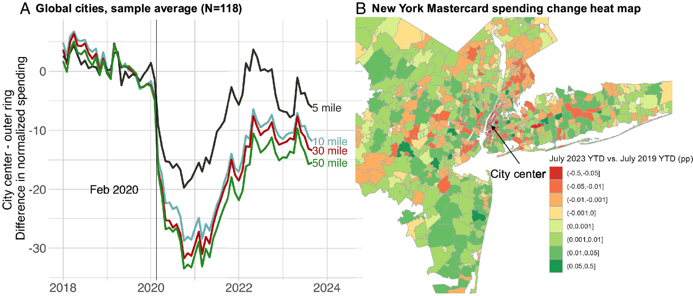
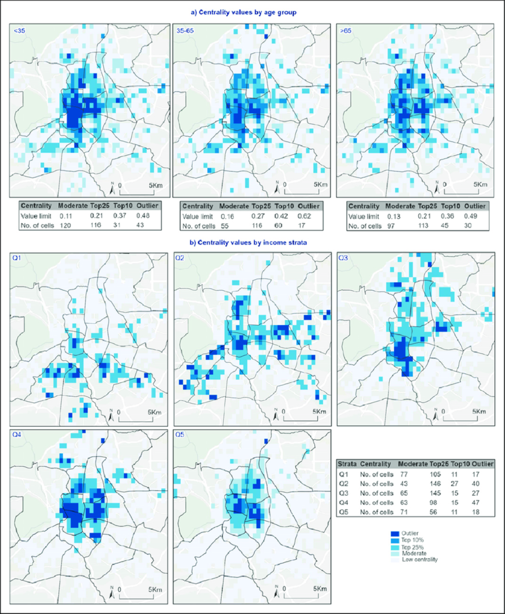
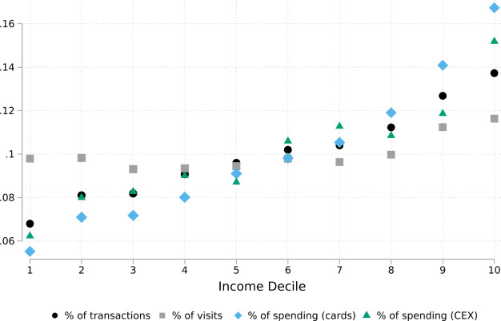
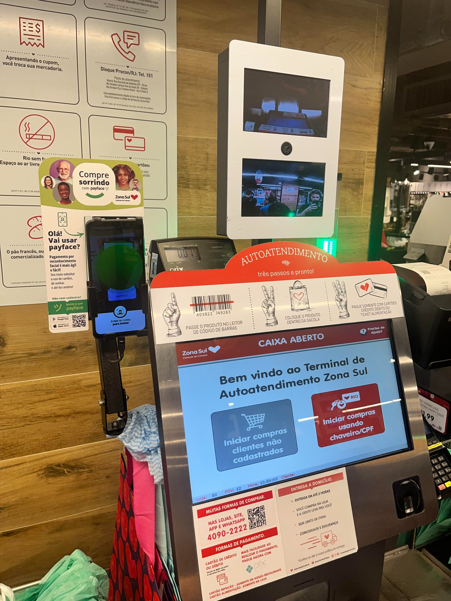
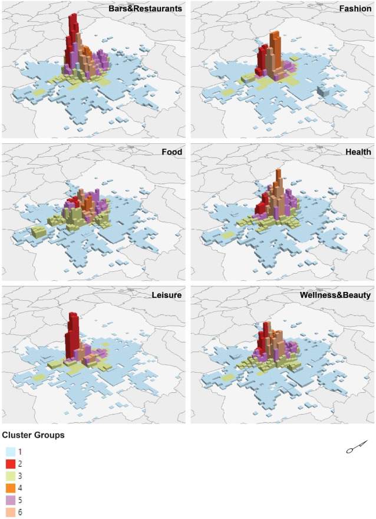

Objet et ambition du projetProject scope and ambition
Cette recherche s’inscrit d’abord en géographie économique urbaine. Elle propose d’analyser les infrastructures de paiement numérique comme des infrastructures de circulation de la valeur, afin de comprendre comment des flux monétaires agrégés révèlent, structurent ou renforcent des centralités économiques et certaines inégalités socio-spatiales à l’échelle intra-urbaine. This research is rooted first in urban economic geography. It proposes to analyze digital payment infrastructures as infrastructures for the circulation of value in order to understand how aggregated monetary flows reveal, structure, or reinforce economic centralities and certain socio-spatial inequalities at the intra-urban scale.
L’objet du projet n’est donc pas, d’abord, l’adoption des paiements numériques. Il porte plutôt sur leur appropriation post-déploiement : la manière dont ces dispositifs s’insèrent dans des économies locales, avec des effets variables selon les groupes sociaux, les commerces et les territoires. Les instant payments, les réseaux cartes, les wallets, les plateformes de paiement ou les dispositifs d’acquiring sont ici traités comme des équipements socio-techniques qui filtrent l’accès aux circuits de dépense, les coûts de transaction et la visibilité économique. The primary object of the project is therefore not the adoption of digital payments as such. It focuses instead on their post-deployment appropriation: the way these devices become embedded in local economies, with variable effects across social groups, businesses, and territories. Instant payments, card networks, wallets, payment platforms, or acquiring devices are treated here as socio-technical equipment that filters access to spending circuits, transaction costs, and economic visibility.

Figure 1. Redistribution spatiale des dépenses entre centres et périphéries urbainesFigure 1. Spatial redistribution of spending between urban cores and peripheries
Cette figure illustre ce que les chercheurs qualifient de Donut Effect, c’est-à-dire le déplacement relatif de la croissance des dépenses des centres-villes vers les périphéries dans un ensemble de grandes villes. Elle montre que les flux de dépense constituent un révélateur des recompositions spatiales de l’activité économique urbaine. This figure illustrates what researchers call the Donut Effect, that is, the relative shift in spending growth from downtown areas toward peripheral areas across a set of large cities. It shows that spending flows can reveal the spatial reconfiguration of urban economic activity.
Un projet à l’intersection de trois débatsA project at the intersection of three debates
Le projet se situe à l’intersection de trois débats qui sont souvent traités séparément, alors qu’ils gagnent ici à être articulés. L’enjeu général est de comprendre comment les infrastructures de paiement, envisagées comme infrastructures de circulation et de mise en visibilité de la valeur, permettent d’éclairer autrement la structure économique intra-urbaine. The project stands at the intersection of three debates that are often treated separately, even though they become stronger when articulated together. The broader goal is to understand how payment infrastructures, approached as infrastructures for circulation and the visualization of value, shed a different light on intra-urban economic structure.

Figure 2. Matrice origine-destination des flux de consommation intra-urbains par groupes de populationFigure 2. Origin-destination matrix of intra-urban consumption flows by population group
Cette figure montre que les données transactionnelles permettent de reconstruire des mobilités économiques relationnelles entre espaces de résidence et espaces de consommation. Elle illustre directement le potentiel d’une lecture de la ville par les flux plutôt que par les seuls volumes de dépense. This figure shows that transactional data can reconstruct relational economic mobilities between residential spaces and consumption spaces. It directly illustrates the potential of reading the city through flows rather than only through spending volumes.
Mécanisme théorique centralCore theoretical mechanism
L’hypothèse générale du projet est que les infrastructures de paiement ne sont pas neutres dans la ville. Elles configurent l’accès aux circuits de dépense, la fiabilité des échanges, les coûts de transaction, la visibilité économique et les capacités d’acceptation marchande. Ces propriétés influencent les modalités localisées de participation économique, différemment selon les groupes sociaux, les types de commerce et les territoires. The general hypothesis of the project is that payment infrastructures are not neutral within the city. They configure access to spending circuits, the reliability of exchanges, transaction costs, economic visibility, and merchant acceptance capacities. These properties influence localized modes of economic participation differently across social groups, business types, and territories.
Ces effets différenciés deviennent observables dans des microflux monétaires urbains : des signaux agrégés de circulation de la valeur à fine maille spatiale et temporelle. Le projet ne pose donc pas une causalité mécanique entre paiement numérique et transformation urbaine. Il propose plutôt un mécanisme de médiation spatiale : les infrastructures de paiement reconfigurent certaines conditions locales de circulation de la valeur, et ces reconfigurations deviennent partiellement lisibles dans les flux agrégés. These differentiated effects become observable in urban micro-monetary flows: aggregated signals of value circulation at a fine spatial and temporal scale. The project therefore does not posit a mechanical causality between digital payment and urban transformation. It proposes instead a mechanism of spatial mediation: payment infrastructures reconfigure certain local conditions of value circulation, and those reconfigurations become partly legible in aggregated flows.

Figure 3. Centralité économique selon les groupes de populationFigure 3. Economic centrality by population group
Cette figure est directement alignée avec le coeur du projet puisqu’elle met en relation centralités économiques et disparités sociospatiales. Elle permet d’illustrer de manière visuelle que les structures de consommation et les pôles d’attraction ne sont pas distribués uniformément entre groupes sociaux. This figure is directly aligned with the core of the project because it links economic centralities with socio-spatial disparities. It visually shows that consumption structures and poles of attraction are not distributed uniformly across social groups.
Ce que le projet apporte de nouveauWhat the project brings that is new
La thèse propose une lecture intégrée des paiements numériques comme infrastructures urbaines de circulation de la valeur. Elle rapproche ainsi géographie économique urbaine, géographies monétaires et études des infrastructures autour d’un même objet : la manière dont la ville est structurée par des circuits ordinaires de dépense. The dissertation proposes an integrated reading of digital payments as urban infrastructures for the circulation of value. It thereby brings urban economic geography, monetary geographies, and infrastructure studies together around a shared object: the way the city is structured by ordinary circuits of spending.
Sur le plan analytique, le projet montre que des flux monétaires agrégés peuvent servir à identifier des centralités économiques, des asymétries d’attraction, des spécialisations fonctionnelles et certaines formes de dépendance territoriale qui ne sont pas pleinement visibles à travers les seuls indicateurs d’emploi, de transport ou de foncier. At the analytical level, the project shows that aggregated monetary flows can be used to identify economic centralities, asymmetries of attraction, functional specializations, and certain forms of territorial dependence that are not fully visible through employment, transport, or land indicators alone.

Figure 4. Répartition de l’activité entre fréquentation, transactions et dépenses par déciles de revenuFigure 4. Distribution of activity across visits, transactions, and spending by income decile
Cette figure montre que les données de paiement ne capturent pas exactement les mêmes réalités que les données de mobilité ou de fréquentation et qu’elles présentent des biais sociaux potentiels. Elle est importante pour justifier une lecture prudente et méthodologiquement réflexive des données transactionnelles. This figure shows that payment data do not capture exactly the same realities as mobility or footfall data, and that they carry potential social biases. It is important because it supports a cautious and methodologically reflexive reading of transactional data.
Concepts centrauxCore concepts
Les microflux financiers urbains désignent ici des signaux agrégés de circulation de la valeur à petite maille spatiale et temporelle. Ils permettent d’observer l’intensité économique des lieux, les rythmes de dépense, les polarités marchandes et, lorsque les données le permettent, les relations entre espaces de résidence et espaces de consommation. Urban microfinancial flows refer here to aggregated signals of value circulation at a fine spatial and temporal scale. They make it possible to observe the economic intensity of places, spending rhythms, commercial polarities and, when the data allow it, the relationships between residential spaces and consumption spaces.
Les infrastructures de paiement désignent l’ensemble des dispositifs techniques, organisationnels et réglementaires qui rendent possible le transfert de valeur : rails, interfaces, terminaux, réseaux d’acceptation, intermédiaires, normes de conformité et conditions d’accès. Le projet les traite comme des dispositifs qui structurent les échanges, plutôt que comme un simple support neutre. Payment infrastructures designate the set of technical, organizational, and regulatory devices that make value transfer possible: rails, interfaces, terminals, acceptance networks, intermediaries, compliance standards, and access conditions. The project treats them as devices that structure exchanges, rather than as a neutral support layer.

Figure 5. Dispositif de paiement dans un commerce à Rio de JaneiroFigure 5. Payment setup in a retail shop in Rio de Janeiro
Cette photographie rend visible la multiplication et la coexistence d’infrastructures matérielles de paiement au sein d’un même espace marchand. Elle met en évidence un agencement technique dense combinant terminal carte, interface interactive, QR codes, dispositifs de captation visuelle et couche applicative supplémentaire liée au paiement par reconnaissance faciale. L’image donne ainsi à voir l’hybridation des dispositifs techniques, informationnels et commerciaux qui encadrent l’acte de paiement. This photograph makes visible the multiplication and coexistence of material payment infrastructures within a single retail space. It highlights a dense technical arrangement combining a card terminal, an interactive interface, QR codes, visual capture devices, and an additional application layer linked to facial-recognition payment. The image thus shows the hybridization of technical, informational, and commercial devices framing the act of payment.
Stratégie empirique et faisabilitéEmpirical strategy and feasibility
L’enquête est pensée d’emblée à l’échelle intra-urbaine. Elle vise à comparer des espaces contrastés au sein d’une même ville ou, selon les possibilités d’accès aux données, entre plusieurs terrains comparables : centralités établies, espaces intermédiaires, polarités secondaires, périphéries et espaces populaires plus faiblement intégrés aux circuits dominants de dépense. The investigation is designed from the outset at the intra-urban scale. It aims to compare contrasted spaces within a single city or, depending on data access, across several comparable field sites: established centralities, intermediate spaces, secondary poles, peripheries, and popular areas less strongly integrated into dominant circuits of spending.
Les données principales seront des données transactionnelles agrégées issues, selon les possibilités d’accès, de réseaux cartes, de paiements instantanés, de wallets ou de plateformes. Lorsque des matrices origine-destination sont disponibles, elles permettent une lecture relationnelle des flux. En leur absence, l’analyse repose sur des indicateurs de lieu de dépense, de fréquence transactionnelle et, si possible, de volume, mis en relation avec des données urbaines complémentaires. La faisabilité du projet repose ainsi sur une architecture empirique progressive et adaptable. The main data will be aggregated transactional data drawn, depending on access possibilities, from card networks, instant payments, wallets, or platforms. When origin-destination matrices are available, they enable a relational reading of flows. In their absence, analysis relies on indicators of spending location, transaction frequency, and, when possible, volume, linked to complementary urban data. The feasibility of the project therefore rests on a progressive and adaptable empirical architecture.

Figure 6. Environnements de dépense dans la ville de Madrid et volume total des dépensesFigure 6. Spending environments in Madrid and total expenditure volume
Cette figure montre que les centralités économiques peuvent être différenciées à la fois par l’intensité des dépenses et par leur spécialisation sectorielle. Elle renforce l’idée que la structure spatiale de l’activité économique urbaine combine concentration, hiérarchisation et diversité fonctionnelle. This figure shows that economic centralities can be differentiated both by spending intensity and by their sectoral specialization. It reinforces the idea that the spatial structure of urban economic activity combines concentration, hierarchy, and functional diversity.
Quel type de données suffit déjà pour commencerWhat kind of data is already enough to begin
À partir des documents scientifiques et du dossier Data Provider, ce bloc résume le socle empirique du projet : ce qu’un jeu de données agrégé permet déjà de voir, et avec quelles méthodes. Drawing on the academic documents and the Data Provider dossier, this block summarizes the empirical core of the project: what an aggregated dataset already makes visible, and through which methods.
Zone, période, volume agrégé et montant agrégé : assez pour cartographier intensités et premières centralités.Zone, period, aggregated volume, and aggregated amount: enough to map intensities and first-order centralities.
Catégories agrégées, série plus longue, granularité plus fine : typologies territoriales et lectures sectorielles plus robustes.Aggregated categories, longer series, finer granularity: stronger territorial typologies and sectoral readings.
Canaux, moyens de paiement, points d’acceptation : comparaisons plus fines des structures de dépense et des rythmes.Channels, payment means, acceptance points: finer comparisons of spending structures and rhythms.
Flux agrégés entre zones : attractivité inter-spatiale, dépendances territoriales et aires fonctionnelles de consommation.Aggregated flows between zones: inter-spatial attractiveness, territorial dependencies, and functional consumption areas.
Variables et méthodesVariables and methods
- Information géocodée ou agrégée par zone, profondeur temporelle, volume et montant agrégésGeocoded or zone-aggregated information, temporal depth, aggregated volume, and amount
- Cartographie analytique, statistique spatiale, comparaisons multi-échelles, clustering et analyses temporellesAnalytical mapping, spatial statistics, multi-scale comparisons, clustering, and temporal analysis
- Analyse de flux lorsque des relations entre zones existent, croisée avec des couches urbaines complémentairesFlow analysis whenever inter-zone relationships exist, combined with complementary urban layers
Principe de prudencePrinciple of caution
Le bon point de départ n’est pas le jeu de données le plus riche, mais le plus crédible, le mieux documenté et le plus compatible avec les contraintes d’accès.The right starting point is not the richest dataset, but the most credible, best documented, and most compatible with access constraints.
Pour aller plus loinTo go further
Si vous souhaitez aller plus loin, vous pouvez télécharger ci-dessous une version plus longue du projet, en français ou en anglais, selon le niveau de détail et le cadrage recherchés. If you would like to go further, you can download below a longer version of the project, in French or in English, depending on the level of detail and framing you need.
Accéder aux documents détaillésAccess the detailed documents